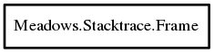

Frame
Object Hierarchy:

Description:
public class Frame
A part of a stacktrace.
This class represent on instance of a frame, ie a particular location in a binary (application or library) on the system called by the
application
Note: frames from system libraries without code information available are not displayed by default. See
Meadows.Stacktrace.Stacktrace.hide_installed_libraries for how to display them.
Content:
Properties:
- public string address { get; }
Address of the stack in hexadecimal.
- public string line { get; }
Line of code. Can point to C code, Vala code or be blank if no symbol
is available (or if -rdynamic has not been set during the compilation of the binary)
- public string line_number { get; }
Line number in the code file. May be blank if no code information is
available
- public string file_path { get; }
Full path to the code file as it was stored on the building machine.
- public string file_short_path { get; }
Path the code file relative to the current path. Returns the path to
the installed binary if no code information is available
- public string function { get; }
C Function name.
Creation methods:
- public Frame (string address, string line, string function, string file_path, string file_short_path, string line_number)
Methods: